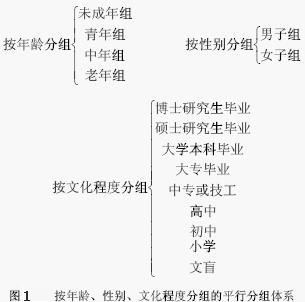
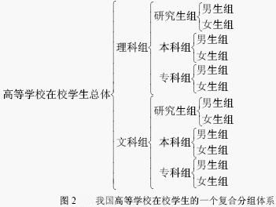
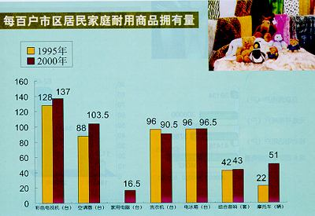
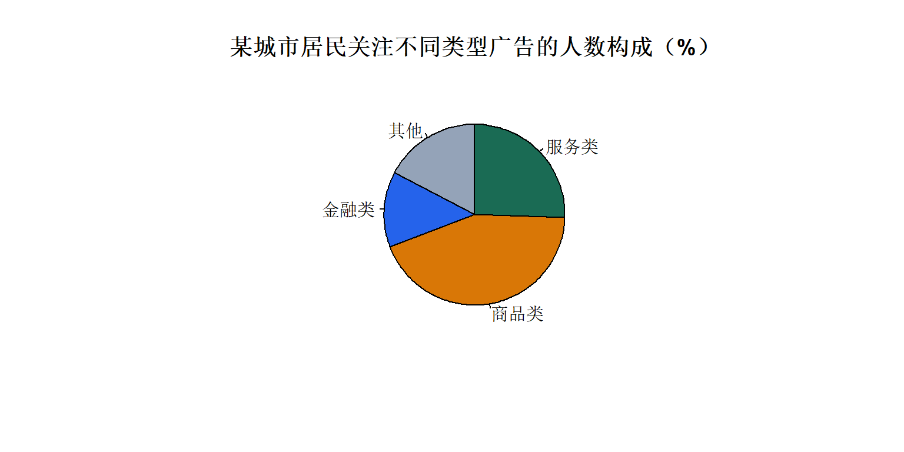
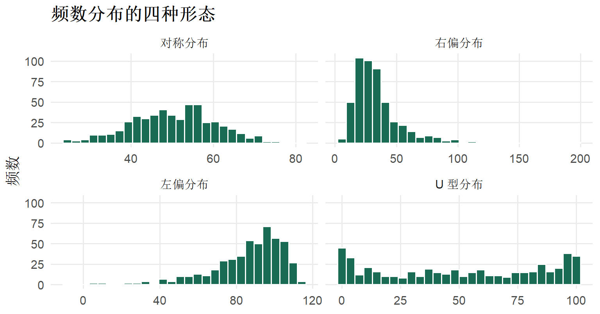

第三章 统计数据整理
《统计学原理》R 语言交互课件
# 《统计学原理》R 课件 · 公共配置 # 每个章节 qmd 通过 ```{r, file="_setup.R"} 方式引入 :: opts_chunk$ set (comment = "#>" ,collapse = TRUE ,out.width = "88%" ,fig.align = "center" ,fig.width = 8 ,fig.height = 5 ,fig.retina = 2 ,dev.args = list (family = "sans" )# 中文友好的 ggplot 主题 if (requireNamespace ("ggplot2" , quietly = TRUE )) {:: theme_set (:: theme_minimal (base_size = 14 ) + :: theme (plot.title = ggplot2:: element_text (face = "bold" ),panel.grid.minor = ggplot2:: element_blank ()# 讲义用统一调色板 <- c ("#1a6b54" , "#d97706" , "#2563eb" , "#c2410c" , "#7c3aed" , "#0891b2" )
第一节 统计数据整理的基本问题
本节从统计工作的整体流程出发，界定统计整理的概念与地位，说明统计整理的程序，并介绍正式分组汇总之前的数据预处理环节——审核、筛选与排序。
统计整理的概念
（课本引例 P51，第二版）
统计整理 是指根据统计研究的目的，将统计调查所得的原始资料（也称初级资料 ）进行科学的分类和汇总 ；或对已经加工的综合资料（也称次级资料 ）进行再加工，为统计分析准备系统化的、条理化的 综合资料的工作过程。
统计整理是统计调查的继续 、统计分析的前提 。
统计整理的方法是分组、汇总和编表 。
引例：两个家族两百年繁衍发展的归类整理
美国学者阿尔伯特·爱德华·温希普（Albert Edward Winship）在 1900 年做了一项统计学研究，比较两个家族两百年的情况，写成《Jukes-Edwards》一书，追踪了两个家族近 200 年的繁衍发展：一个家族从爱德华兹（Edwards） 开始，他是虔诚的传道人，生于 1703 年；另一个家族从马克·尤克斯（Max Jukes） 开始，尤克斯是个无神论者，生于 1700 年。
100位大学教授
310名流氓
14位大学校长
440名患性病
70位律师
130名坐牢13年以上
30位法官
7名杀人犯
60位医生
100名酒徒
60位作家
60名小偷
300位牧师、神学家
190名妓女
3位议员
20名商人（其中有10名是在监狱学会经商）
1位副总统
总数（人）：1394 总数（人）：903
资料来源：《经典统计故事》
收集 200 年的数据不易，归类整理方法可行，说明信仰的力量有一定意义。但案例也有局限性，因为”个案不能说明全部问题”——做统计分析要有对照组，但仅仅用两个家族个案进行对照略显不充分。这个引例提示我们：资料搜集之后，必须经过归类整理 才能显现出有意义的结论。
数据预处理的软件操作：数据透视表与清洗函数（拓展）（续）
提取文本字符
=LEFT(text, [num_chars]) 从左侧；=RIGHT(...) 从右侧；=MID(text, start_num, num_chars) 从指定位置
统一大小写
=LOWER(text) 全部小写；=UPPER(text) 全部大写；=PROPER(text) 首字母大写
清除空格
=TRIM(text) 删除首尾及多余空格
清除非打印字符
=CLEAN(text)
合并文本内容
=[单元格1]&[单元格2]
删除重复值
【数据】→【删除重复项】
查找/替换
【开始】→【查找和选择】（可配合通配符批量纠正录入错误）
（三）R 的一句话对照
上述清洗动作在 R 的 dplyr/tidyverse 体系中可写成一条管道，例如”去掉缺失值 → 去重 → 去除姓名首尾空格”：
%>% filter (! is.na (x)) %>% distinct () %>% mutate (name = trimws (name))概念（审核、筛选、排序）先行、操作（透视表、清洗函数）随后，是本章与后续软件实践衔接的基本路径；具体上机演练见配套实践材料。
第二节 统计分组
分组是统计整理的核心方法。本节依次讨论统计分组的概念、作用、原则与种类，并重点讲授统计分组的方法——分组标志的选择、组数与组限的确定、等距与异距的处理以及组中值的计算。
统计分组的概念
统计分组是根据统计研究的目的和研究对象的特点，将统计总体各个单位按照某一个标志 划分为若干性质不同的部分或组。
即对总体实行异质分解 ，对总体单位实行同质组合 。
统计分组的作用
总体中混杂的各类单位在分组之前彼此混同，经过统计分组后被划分为若干性质不同的组，各组单位数占总体的比重即可计算出来（示意图中为 25%、33%、42%）。
（1）划分现象类型。 例如按所有制性质划分，我国现有 8 种经济类型：
1
国有经济
2
集体经济
3
私营经济
4
个体经济
5
联营经济
6
股份制经济
7
外商投资经济
8
港澳台投资经济
（图示说明：示意图对比分组前后：混合总体被划分为三组并标注各组比重（25%、33%、42%），直观展示统计分组划分现象类型的作用。）
（2）研究总体结构。 分组后可以反映总体内部构成及其变化。例如，上海市按 GDP 计算的三次产业结构（%）：
GDP
100
100
100
100
第一产业
3.2
4.3
2.5
2.3
第二产业
75.7
63.8
54.5
52.2
第三产业
21.1
31.9
43.0
45.5
统计分组的作用（续）
从表中可以看出，第一、第二产业比重不断下降，第三产业比重持续上升，反映上海产业结构的高级化趋势。
（3）研究现象之间的依存关系。 例如，某地农民家庭按收入分组的恩格尔系数：
恩格尔系数（%）
64.9
60.2
56.7
54.4
50.5
49.9
43.6
表中数据显示：随着收入水平的提高，恩格尔系数（食品支出占消费支出的比重）不断下降，说明收入水平与消费结构之间存在明显的依存关系。
统计分组的原则：穷尽与互斥
穷尽原则 ——即应使总体中的每一单位都应有组可归。互斥原则 ——即总体中任一单位只能归入某一组。
统计分组的种类与分组体系
1、按采用分组标志的多少
简单分组 ——对总体各单位只采用一个标志进行分组，许多简单分组从不同角度说明同一个总体，就构成了一个平行的分组体系；复合分组 ——对总体各单位同时采用两个或两个以上的标志进行层叠分组。
2、按分组标志的性质不同
品质分组（属性分组） ——按品质标志进行的分组；数量分组（变量分组） ——按数量标志进行的分组。
3、按分组的作用和任务不同
类型分组 ——将复杂现象分为若干性质不同部分的分组；结构分组 ——在总体分组基础上计算出各组占总体的比重；分析分组 ——分析现象间依存关系的分组。
统计分组体系 ：统计分组后所形成的一系列互相联系、互相补充的组的整体，称为分组体系，分为平行分组体系 与复合分组体系 两类。
一、平行分组体系 ：对同一总体分别按若干个标志独立分组，各分组相互平行、互不交叉。例如按年龄、性别、文化程度分组：
按年龄分组
未成年组、青年组、中年组、老年组
按性别分组
男子组、女子组
按文化程度分组
博士研究生毕业、硕士研究生毕业、大学本科毕业、大专毕业、中专或技工、高中、初中、小学、文盲
统计分组的种类与分组体系（续）
二、复合分组体系 ：将两个或多个分组标志层叠起来，对总体进行逐层划分。例如我国高等学校在校学生的复合分组体系：
理科组
研究生组：男生组、女生组
本科组：男生组、女生组
专科组：男生组、女生组
文科组
研究生组：男生组、女生组
本科组：男生组、女生组
专科组：男生组、女生组
教学提示：平行分组体系是”并列式”的多标志分组，每组只反映一个标志的差异；复合分组体系是”嵌套式”分组，能同时反映多个标志共同作用下的总体内部结构，但分组数目会随标志个数成倍增加，应注意标志不宜过多。


统计分组的方法：分组标志的选择
统计分组的关键是正确地选择分组标志 和划分各组界限 。分组标志的选择应遵循以下原则：
① 必须根据研究目的选择分组标志。 例如：研究人口的年龄构成时，就应该按”年龄”分组；研究各类型的工业企业在工业生产中的地位和作用时，就应该按”经济类型”分组，等等。
② 必须选择能够反映现象本质特征的标志。 e.g. 居民收入水平（P61）→ 家庭总/人均（可支配）收入。
③ 必须选择符合历史条件和具体情况（的标志）。 e.g. 企业规模大小（P61）——职工数、固定资产价值、企业总产出、销售总额；劳动密集型 & 资本密集型。
品质标志分组的组数与组限
按品质标志分组时，分组标志一旦确定，组数、组名就随之确定，组数 = 分组标志表现数 。例如：按”性别”这一品质标志分组，性别只有男、女两种表现，故组数为 2 组。
男职工
253
68.75
女职工
115
31.25
合计
368
100.00
该表展示了品质标志分组的典型结果——组数固定（男、女两组），各组的频数（人数）与频率（比率）之和分别等于总体总量 368 人和 100%。
数量标志分组：单项式分组
按数量标志分组时，应按照研究目的及研究对象的特点确定相应的组数，划分相应的组限（相邻两组界限）。
单项式分组 是将某一变量的每一个变量值 作为一组，组数及组限是明确的，组数 = 变量值的个数 。
示例：某厂职工家庭人口分组统计 （家庭人口这一变量共有 6 个变量值（1~6 人），故组数为 6 组，每个变量值各占一组，属于典型的单项式分组）：
1
7
2.9
2
38
15.2
3
105
41.3
4
54
20.5
5
31
12.1
6
20
8.0
合计
255
100
连续组距式分组、间断组距式分组与开口组
（1）上下组限重叠（连续组距式分组）。 连续组距式分组中，相邻两组的组限上下重叠（“不漏”）。归属规则为：上组限不在内 （上限不包括界限值），下限包括界限值 。例如：身高 150 cm 不应放在第 1 组（145～150），而应放在第 2 组（150～155）。
145～150
3
6
150～155
5
10
155～160
8
16
160～165
14
28
165～170
10
20
170～175
6
12
175～180
4
8
合计
50
100
要点：各组频数之和等于总人数 50 人，各组频率之和为 100%。上下组限重叠保证分组”不漏”，边界值按”上限不在内”原则归入后一组。
（2）上下组限间断（间断组距式分组）。 组距式分组要求”不重不漏”。当相邻组的上下组限间断（即本组上限与下一组下限之间留有空隙）时，称为间断组距式分组 ，适用于离散型变量 。由于零件数是离散型变量，各取值为整数，故可采用组限间断的方式分组，既保证每个数据都能归入唯一一组（不重），又能覆盖全部数据（不漏）。
连续组距式分组、间断组距式分组与开口组（续）
105~109
3
6
110~114
5
10
115~119
8
16
120~124
14
28
125~129
10
20
130~134
6
12
135~139
4
8
合计
50
100
（3）开口组。 为避免出现空白组（即没有变量值的组）或个别极端值被漏掉，可采用开口组 形式：首组”110以下”缺下限、末组”135以上”缺上限，中间各组组距为 5（如 110114、115 119 等）。
110以下
3
6
110~114
5
10
115~119
8
16
120~124
14
28
125~129
10
20
130~134
6
12
135以上
4
8
合计
50
100
组距式分组的步骤与例题：50 名工人日加工零件数的分组
对原始数据进行组距式分组时，应按以下四个步骤进行：
A. 排序 ：将原始数据按大小顺序排列。B. 确定组数 ：组数的确定应以能够显示数据的分布特征和规律为目的。在实际分组时，可按经验公式（Sturges 公式）来确定组数 \(K\) ：
\[K = 1 + \frac{\lg(n)}{\lg(2)} = 1 + 3.322\,\lg n\]
其中 \(n\) 为数据的个数。
C. 确定各组的组距 ：组距是一个组的上限与下限之差，可根据全部数据的最大值和最小值及所分的组数来确定，即：
\[\text{组距} = (\text{最大值} - \text{最小值}) \div \text{组数}\]
例：某生产车间 50 名工人日加工零件数（单位：个）
组距式分组的步骤与例题：50 名工人日加工零件数的分组（续）
105～110
3
6
110～115
5
10
115～120
8
16
120～125
14
28
125～130
10
20
130～135
6
12
135～140
4
8
合计
50
100
频率 = 频数 / 总频数 × 100%，例如 120～125 组的频率为 14/50 = 28%。各组频率之和应等于 100%。
等距分组与异距分组
等距分组 ：标志值在各组保持相等的组距，即各组的标志值变动都限于相同的范围。
必须采用异距分组的情况：
第一，标志值分布很不均匀的场合 ：分布密集的区域使用较短的分组，分布稀少的部分使用较长的分组。例如：学生成绩如果密集于 60-80 分或 70-90 分之间，其他部分分布稀少，若以 10 分为组距进行等距式分组，无法显示出分布规律性。第二，标志值相等的量具有不同意义的场合 。同样是”一个月”，对于新生儿和对成年人意义不一样，此时应采用异距分组：1岁以下按月分组；1–10岁按年分组；11–20岁按5年分组；21岁以上按10年或20年分组。第三，标志值按一定比例发展变化的场合 。例如超市的月销售额从 5 万元至 5 千万元，可采取公比为 10 的不等距分组：5万元–50万元；50–500万元；500万元–5000万元。
等距分组与不等距分组的区别：
等距分组 ：各组频数的分布不受组距大小的影响，可直接根据绝对频数来观察频数分布的特征和规律；不等距分组 ：各组频数的分布受组距大小不同的影响，各组绝对频数的多少不能反映频数分布的实际状况，需要用频数密度反映频数分布的实际状况，即：
\[\text{频数密度} = \frac{\text{频数}}{\text{组距}}\]
R 实践 · 从原始数据到频数分布表（全流程）
排序 → 定组数组距（Sturges 公式）→ cut() 分组 + table() 计数。原课件整页的手工整理，R 三个函数完成。
# 50 名工人日加工零件数原始数据 <- c (117 ,108 ,110 ,112 ,137 , 122 ,131 ,118 ,134 ,114 ,124 ,125 ,123 ,127 ,120 , 129 ,117 ,126 ,123 ,128 ,139 ,122 ,133 ,119 ,124 , 107 ,133 ,134 ,113 ,115 ,117 ,126 ,127 ,120 ,139 , 130 ,122 ,123 ,123 ,128 ,122 ,118 ,118 ,127 ,124 , 125 ,108 ,112 ,135 ,121 )sort (parts) # 1. 排序 #> [1] 107 108 108 110 112 112 113 114 115 117 117 117 118 118 118 119 120 120 121 #> [20] 122 122 122 122 123 123 123 123 124 124 124 125 125 126 126 127 127 127 128 #> [39] 128 129 130 131 133 133 134 134 135 137 139 139 c (最大值 = max (parts), 最小值 = min (parts),= ceiling (1 + log2 (50 )), # 2. Sturges: K=1+lgN/lg2 ≈ 7 = (max (parts) - min (parts)) / 7 ) # (139-107)/7 = 4.6 → 取 5 #> 最大值 最小值 组数 组距 #> 139.000000 107.000000 7.000000 4.571429
# 3. 按 105～110、110～115 …分组（上组限 inclusive） <- seq (105 , 140 , by = 5 )<- cut (parts, breaks = breaks, right = FALSE )<- table (grp)data.frame (分组 = names (freq), 频数 = as.integer (freq),= round (as.integer (freq) / 50 * 100 , 0 ))#> 分组 频数 频率 #> 1 [105,110) 3 6 #> 2 [110,115) 5 10 #> 3 [115,120) 8 16 #> 4 [120,125) 14 28 #> 5 [125,130) 10 20 #> 6 [130,135) 6 12 #> 7 [135,140) 4 8 # 与原课件结果完全一致：3 5 8 14 10 6 4
开口组、闭口组与组中值、组距的确定
使用”XX以上”或”XX以下”这类不确定组距的组，称为开口组 ；上下限都确定的组为闭口组 。
组中值 是上下限之间的中点数值，用以代表各组标志值的一般水平。计算公式：
\[\text{组中值} = \frac{\text{上限} + \text{下限}}{2}\]
\[\text{组中值} = \text{上限} - \frac{1}{2}\times\text{邻组组距}\]
\[\text{组中值} = \text{下限} + \frac{1}{2}\times\text{邻组组距}\]
仍以前述某车间 50 名工人日加工零件数分组表（“110以下”至”135以上”，各邻组组距为 5）为例：“110以下”组的组中值 = 110 − 5/2 = 107.5；“135以上”组的组中值 = 135 + 5/2 = 137.5。
组距 是上下限之间的距离，其计算公式为：
\[\text{组距} = \text{本组上限} - \text{本组下限}\]
\[\text{组距} = \text{本组上限} - \text{本组下限} + 1\]
例 ：某大学新生按年龄分为 17-19 岁、20-22 岁，组距为 3 岁。（间断式分组：19 - 17 + 1 = 3）
第三节 频数分布
在统计分组的基础上形成频数分布，是统计整理的主要成果。本节介绍频数分布的概念与种类、变量数列的编制方法、累计频数与累计频率，以及洛伦茨曲线与基尼系数。
频数分布的概念：频数与频率
在统计分组 的基础上，将总体中的所有单位按组归类整理，形成总体中各个单位数在各组间的分布，叫做频（次）数分布 。将各组组别与次数依次编排而形成的数列叫做次数分布数列 ，简称为分布数列 。
两个核心概念：
频数（次数） ——分布在各组的单位数；频率（比率） ——各组次数与总次数之比形成的相对数，即：
\[\text{频率} = \frac{\text{各组次数}}{\text{总次数}}\]
次数分布数列的分类
分布数列可以分为品质分布数列 与变量分布数列 ，分别由品质标志分组和数量标志分组形成。其中，变量分布数列 按变量类型可作如下分类：
离散型变量取值可一一列举，故可用单项式分组（每个变量值为一组）；连续型变量取值连续，只能采用组距式分组，组距可相等（等距数列）也可不相等（不等距数列）。
（图示说明：以树状分类结构图展示变量分布数列按离散型/连续型及单项式、组距式（等距、不等距）的完整分类体系，帮助学生直观理解各类数列的层级关系。）
分布数列的基本形式与构成要素
分布数列由两个要素构成：分组（各组名称/变量值） 与 单位数（频数） ，并可进一步计算 频率 。基本形式如下：
由「分组」和「单位数」两列构成的部分称为 频数分布 （频数数列），反映总体单位在各组的分布状况；
由「分组」和「频率」两列构成的部分称为 频率分布 （频率数列），反映总体结构，各组频率之和等于 100%。
即：频率 = (各组单位数 ÷ 总体单位数) × 100%，合计为 100。
以第二节中”某厂职工人数统计表”（按性别分组）为例，分配数列的构成要素为：各组名称 （分组标志的具体表现，如”男职工”与”女职工”）、次数 （频数，即各组职工人数）与频率 （各组人数占总体人数的比率，如男职工 253/368 = 68.75%、女职工 115/368 = 31.25%，合计 100.00%）。该表直观展示了品质分配数列的三要素。
变量数列的编制
单项式变量数列 就是数列中的每组用一个变量值来表示，每组的标志值是一个值，组数由分组标志值决定。前述”某厂职工家庭人口分组统计”即属此类：变量为”家庭人口”，其取值为离散整数（1~6 人），故每组只用一个变量值表示，组数即由这些不同的标志值个数决定，频数合计为 255 户，频率合计为 100%。
组距式变量数列 就是数列中的每个组用两个反映一定变化范围的变量值表示，即每个组使用两个变量值限定的区间表示，组数的多少由组距的大小决定。
示例：50 户居民×月购买消费品支出情况表（单位：元） （每组由区间（如 800～900）界定，组距为 100 元）：
800～900
5
0.10
900～1000
1
0.02
1000～1100
8
0.16
1100～1200
11
0.22
1200～1300
11
0.22
1300～1400
7
0.14
1400～1500
4
0.08
1500以上
3
0.06
合计
50
1.00
频率计算：\(f_i/\sum f_i\) ，如第一组 \(5/50=0.10\) ；频数合计为 50，频率合计为 1.00。
组距式分布数列实例
例一：某县人均年收入 （异距分组，各组组距不完全相等，首末两组为开口组）：
2500以下
32.00
2500—3000
88.00
3000—3400
160.00
3400—4000
272.00
4000—5000
152.00
5000以上
44.00
合计
748.00
各组人数之和 32+88+160+272+152+44=748（千人），与合计栏一致。人数最多的一组为 3400—4000 元（272 千人），即该数列的众数组。
例二：某地企业规模分组表 （按职工人数分组，等距分组，组距 100 人，首组与末组均为开口组）：
200人以下
1
1.7
200—299
3
5.0
300—399
5
8.3
400—499
16
26.7
500—599
20
33.3
600—699
9
15.0
700—799
4
6.7
800人以上
2
3.3
合计
60
100.0
组距式分布数列实例（续）
各组企业个数（频数）之和为 60，各组频率之和为 100.0%，体现了频数与频率的对应关系：频率 = 频数 / 总体单位总数 × 100%。从分布形态看，企业个数集中于 400—599 人之间（合计 36 个，占 60%），分布呈中间多、两头少的钟形特征，近似正态分布形态。
累计频数与累计频率
（1）向上累计频数（或频率）分布 ：方法是先列出各组的上限 ，然后由标志值低的组向标志值高的组依次累计频数（或频率）。某组向上累计频数 表明该组上限以下 的各组单位数之和是多少；某组向上累计频率 表明该组上限以下的各组单位数之和占总体单位数的比重。
（2）向下累计频数（或频率）分布 ：方法是先列出各组的下限 ，然后由标志值高的组向标志值低的组依次累计频数（或频率）。
在组距式分组的基础上，可对前述 50 户居民×月购买消费品支出资料分别计算向上累计 （从低组向高组累计，表明小于某值的频数/频率）和向下累计 （从高组向低组累计，表明大于等于某值的频数/频率）：
表2-5 50户居民X月购买消费品支出累计表（向上累计）
累计频数与累计频率（续）
900
5
5
10
10
1000
1
6
2
12
1100
8
14
16
28
1200
11
25
22
50
1300
11
36
22
72
1400
7
43
14
86
1500
4
47
8
94
1600
2
49
4
98
1700
1
50
2
100
合计
50
—
100
—
向下累计
累计频数与累计频率（续）
800
5
50
10
100
900
1
45
2
90
1000
8
44
16
88
1100
11
36
22
72
1200
11
25
22
50
1300
7
14
14
28
1400
4
7
8
14
1500
2
3
4
6
1600
1
1
2
2
合计
50
—
100
—
向上累计表明支出低于某上限的居民户数及比重，如支出低于 1300 元的有 36 户，占 72%；向下累计表明支出不低于某下限的户数及比重，如支出在 1200 元及以上的有 25 户，占 50%。
在频数分布的基础上可进一步绘制累计分布图 ：横轴为居民户月消费支出额（800、900、1000、1100、1200、1300、1400、1500、1600、1700 元），纵轴为累计频数（左轴 0—50 户）与累计频率（右轴 0—1.0），居民户总数为 50 户。从图中可读出：
累计频数与累计频率（续）
1100
约 38 户
约 0.76
约 14 户
约 0.28
1400
约 43 户
约 0.86
约 8 户
约 0.16
两条累计曲线在图中交叉（约在频数 25、频率 0.5 处）；利用累计分布图可近似确定中位数等分位点位置；向上累计曲线单调上升，向下累计曲线单调下降，二者互补。
（图示说明：以居民户月消费支出额为横轴、累计频数（左轴0—50户）与累计频率（右轴0—1.0）为纵轴，绘制向上累计与向下累计两条曲线，直观展示累计分布的读取方法及其在中位数等分位点估计中的应用。）
累积频数分布图：较小制与较大制累积曲线
上一小节的累计分布表可以绘制成专门的累积频数（频率）分布图 （又称累积曲线）。不同教材对两种累计方向的称谓可对照如下：
向上累计（较小制累积 ）
向上累积、以下累积
本组及以下（标志值更小一侧）各组次数/频率的逐级累加
自左下向右上单调上升
向下累计（较大制累积 ）
向下累积、以上累积
本组及以上（标志值更大一侧）各组次数/频率的逐级累加
自左上向右下单调下降
顺序数据同样适用这套术语与图形：例如住房满意度评价从”非常不满意”到”非常满意”逐级累计，即可得各等级以下的户数及其比重，与第四节环形图所用的是同一类资料。
绘制方法 ：以变量值（组距式分组时，向上累计取各组上限 、向下累计取各组下限 ）为横轴，以累计频数或累计频率为纵轴，将各累计点连线即得。两条曲线互补——任一变量值处的向上累计频数与向下累计频数之和等于总频数。
读图应用 ：
洛伦茨曲线与基尼系数（续）
最低
128.5
12.85
12.85
1.57
5
5
12.85
0
中下等
348.0
34.80
47.65
4.08
13
18
47.65
0
中等
466.9
46.69
94.34
16.33
52
70
94.34
0
较高
45.6
4.56
98.90
7.54
24
94
98.90
0
最高
11.0
1.10
100.0
1.88
6
100
100.0
100
合计
1000.0
100.0
—
31.40
100
—
—
—
表中：第（3）栏为累计人口百分比；第（6）栏”实际情况”为累计收入百分比；第（7）栏为绝对平等线下的累计收入；第（8）栏为绝对不平等线下的累计收入。以累计人口百分比为横轴、累计收入百分比为纵轴绘制洛伦茨曲线，与绝对平等线对比即可衡量收入分配的不平等程度。
洛伦茨曲线与基尼系数（续）
洛伦兹曲线与基尼系数。 将人口按收入由低到高排序，以人口累计百分比 为横轴、收入累计百分比 为纵轴绘制累计分布图，得到的曲线称为洛伦兹曲线。
绝对平均线（均等分布线） ：过原点的 45° 对角线，表示收入分配绝对平均，即人口累计 x% 恰好获得收入累计 x%；洛伦兹曲线越偏离绝对平均线（越向下弯曲），说明收入分配越不平等。
设绝对平均线与洛伦兹曲线之间的面积为 A，洛伦兹曲线与右下方边界围成的面积为 B，则：
\[\text{Gini Coef.} = \frac{A}{A+B}\]
洛伦兹曲线越弯曲，A 越大，基尼系数越大，收入分配越不平等；基尼系数取值范围为 0 到 1 之间，越接近 0 表示分配越平均，越接近 1 表示分配越悬殊。
（图示说明：洛伦兹曲线示意图：以人口累计百分比为横轴、收入累计百分比为纵轴，标出绝对平均线、区域 A 与 B 及公式 A/(A+B)，直观展示基尼系数的几何含义。）
第四节 统计数据的显示
整理好的统计数据需要以统计表和统计图的形式科学地显示出来。本节先讲统计表的定义、结构、分类与编制规则，再系统介绍各类统计图的绘制要点与适用场合。
统计表的定义
广义的统计表 ：包括统计工作各个阶段中所用的一切表格。例如：调查阶段的调查表、整理阶段的分组表、汇总表等。狭义的统计表 ：专指分析表和容纳各种统计资料的表格，也就是通常所说的统计表，指整理阶段的统计表。
统计表的结构
统计表的结构可以从两个角度来考察。
（1）从表式上看 ：统计表是由纵横交叉的线条组成的一种表格，包括四个部分——总标题 （置于表上方中央，概括说明全表内容与时间）、横行标题 （说明表中各组的名称，位于左侧）、纵栏标题 （说明表中各指标名称，位于表头）、指标数值 （表中各横行与纵栏交叉处的具体数字）。
（2）从内容上看 ：统计表由主词栏 和宾词栏 两个部分组成——主词栏 是统计表所要说明的总体及其组成部分；宾词栏 是统计表用来说明总体数量特征的各个统计指标。
例表：表2-7 全国税收收入及其构成表（1999年）
增值税和消费税收入
1019.82
16.4
营业税收入
415.37
9.5
个人所得税收入
96.65
28.4
关税收入
130.99
144.4
其他
536.74
17.6
合计 2199.57 19.5
资料来源：《宏观经济研究》1999.5。
统计表的结构（续）
主词栏（按税种分组的各行）是统计表所要说明的总体及其分组；宾词栏（累计税收收入与增长率两列）是说明总体的统计指标；表中各数值即指标数值，如增值税和消费税收入 1019.82 亿元、增长 16.4%，关税收入增长最快达 144.4%，合计税收收入 2199.57 亿元、比上年同期增长 19.5%。
例表：表 2-5 1997～1998 年城镇居民家庭抽样调查资料
一、调查户数
户
37890
39080
二、平均每户家庭人口数
人
3.19
3.16
三、平均每户就业人口数
人
1.83
1.80
四、平均每人全部收入
元
5188.54
5458.34
五、平均每人实际支出
元
4945.87
5322.95
＃消费性支出
元
4185.64
4331.61
非消费性支出
元
755.94
987.17
六、平均每人居住面积
平方米
11.90
12.40
资料来源 ：《中国统计摘要 1999》，中国统计出版社，1999，第 79 页。
统计表的结构（续）
注 ：1．本表为城市和县城的城镇居民家庭抽样调查材料。2．消费性支出项目包括：食品、衣着、家庭设备用品及服务、医疗保健、交通和通讯、娱乐教育文化服务、居住、杂项商品和服务。
此例中，总标题位于表上方概括表的内容；列标题（纵栏标题）为表头各栏（项目、单位、1997 年、1998 年）；行标题（横行标题）为左侧各横行（调查户数、家庭人口数、就业人口数、全部收入、实际支出、居住面积等）；数字资料为表中各栏的具体数值；表下注明资料来源与附注（附加）。
统计表的分类
1、按用途分类 ：广义的统计表可分为调查表、整理表或汇总表、分析表。
2、按主词的结构分类 ：根据主词是否分组和分组的程度，分为简单表、分组表和复合表。
(1) 简单表 ：主词未经任何分组的统计表称为简单表，也称一览表，主词罗列各单位的名称。(2) 分组表 ：主词只按一个标志进行分组形成的统计表，也称简单分组表。（课本 P67 表 3-14 / 三版 P71 表 3-15）(3) 复合表 ：主词按两个或两个以上标志进行分组的统计表，也称复合分组表。
简单表示例：2002 年国际旅游收入居世界前十名的国家 （主词只按顺序罗列，未经任何分组；表含标题、主词（国家与位次）、宾词（旅游收入、占世界比重）与数据资料四部分）：
统计表的分类（续）
美国
1
730.0
16.0
西班牙
2
315.0
6.9
意大利
3
310.0
6.8
法国
4
307.0
6.7
英国
5
209.7
4.6
德国
6
165.0
3.6
中国
7
141.0
3.1
奥地利
8
112.0
2.5
加拿大
9
102.8
2.3
墨西哥
10
78.5
1.7
统计表的分类（续）
复合表示例：1999 年我国人口数及构成 （人口分别按”性别”和”城乡”两个标志分组）：
按性别分 男
64 189
50.98
女
61 720
49.02
按城乡分 市镇
38 892
30.89
乡村
87 017
69.11
该表对同一总体（全国人口）分别按性别、按城乡两个标志分组，各组人口数与比例分别合计，便于同时从性别构成和城乡构成两个角度分析人口结构。
统计图及其分类
统计图 是用几何学的点、线、面或具体事物的形象所构成的用来描述统计资料的图形。课件给出了两个典型例子：圆形图（饼图） 用圆内扇形面积表示各部分比重，按第一至第四季度以不同颜色区分，直观显示各季度占全体的份额；折线图（线图） 用点、线描述现象随时间的变化趋势，纵轴刻度为 0、20、40、60、80、100，“东部”系列的折线先上升（至第三季度达到高点）后回落，突出变动趋势。圆形图适合表现结构（构成比） ，折线图适合表现时间序列的动态趋势 。
（图示说明：页面配有一个四季度的圆形图和一个标注’东部’的折线图，直观示范统计图的两种典型形式及其用途。）
统计图的分类 ：以形状为标准，可分为线图、长条图、时间数列曲线图、面积图、洛伦兹曲线图、立体图、统计地图、象形图。日常分析中最常用的统计图有五类：条形图/柱形图、直方图、折线图、曲线图、饼图，应重点掌握其适用场景。
完整统计图的构成要素 ：除图形以外，完整的统计图还应包括以下五个部分：
统计图及其分类（续）
五要素回答了”一张完整统计图要交代什么”。再把目光放进图的内部：一张典型统计图可以从空画布开始逐层叠加 解剖为以下部件（中英对照）——画布区 → 绘图区 panel （含主网格 major grid、次网格 minor grid）→ 坐标轴 axis （下横轴、上横轴、左纵轴、右纵轴）→ 刻度 （轴主标记 major ticks、轴次标记 minor ticks）与刻度标签值 （axis labels）→ 轴标题 axis title → 几何对象 （图形类型，记作 geom_xx，如散点 geom_point、条形 geom_col、折线 geom_line）→ 变量数值 data value （映射到图上的数据本身）→ 图例 legend （可靠右或靠下放置）→ 图注 footnote 与图题 caption （常注明数据来源）。
统计图及其分类（续）
绘图区 panel、主/次网格
panel.background、panel.grid.major/minor
坐标轴与刻度 axis、ticks
axis.*、axis.ticks、axis.text
轴标题 axis title
axis.title.x/y（内容由 labs(x=, y=) 赋值）
几何对象 geom_xx
geom_point()、geom_col()、geom_line() 等图层函数
图例 legend
legend.position（在 theme() 内调整）
图题/图注 caption
labs(title=, caption=)
这正是一套图形语法（grammar of graphics） 的词汇表：一张图 = 数据 + 几何对象 + 坐标系 + 标度 + 主题 。本课程先在概念层掌握这些词汇，到 R 上机课写出 geom_point()、调整 theme() 参数时即可一一对应、无缝衔接（配套演练见《新增实践 ch03》实践二）。
实践二：统计图解剖——用 annotate/element 逐层标注图形成分
讲义”统计图的解剖”给出了一串词汇：绘图区 panel、坐标轴 axis、刻度 ticks、轴标题 axis title、几何对象 geom、图例 legend、图注 caption。本实践用 mtcars 数据画一张散点图，再用 annotate() 与 theme() 的 element_* 把每个部件指名道姓 地标出来——词汇表与代码就此对上号。
# 实践二：统计图解剖（anatomy of a ggplot） library (tidyverse)# 第 1 层：数据 + 几何对象 geom + 标度（图的主体） <- ggplot (mtcars, aes (x = wt, y = mpg, color = factor (cyl))) + geom_point (size = 3 ) + scale_color_brewer (palette = "Set2" , name = "气缸数" ) + labs (title = "mtcars：车重与油耗的关系（32 辆汽车）" ,x = "车重（千磅）" , y = "每加仑行驶英里数（mpg）" ,caption = "数据来源：R 内置 mtcars 数据集（Henderson & Velleman, 1981）" )# 第 2 层：annotate() 逐个部件打标签（教学用"解剖图"） + annotate ("rect" , xmin = 2.1 , ymin = 15.5 , xmax = 3.45 , ymax = 25.5 ,fill = NA , color = "red" , linetype = "dashed" ) + annotate ("text" , x = 2.1 , y = 26.8 , color = "red" , hjust = 0 , size = 3.5 ,label = "绘图区 panel（红色虚线框内）" ) + annotate ("segment" , x = 3.5 , y = 11.0 , xend = 3.5 , yend = 12.6 ,arrow = arrow (length = unit (0.15 , "cm" )), color = "blue" ) + annotate ("text" , x = 3.6 , y = 10.6 , color = "blue" , hjust = 0 , size = 3.5 ,label = "坐标轴 axis 与刻度 ticks（axis.* / axis.ticks）" ) + annotate ("text" , x = 4.6 , y = 29.5 , color = "darkgreen" , size = 3.5 ,label = "轴标题 axis.title（labs(x=, y=) 赋值）" ) + annotate ("text" , x = 2.0 , y = 13.4 , color = "purple" , size = 3.5 ,label = "几何对象 geom_point（散点层）" ) + annotate ("text" , x = 4.9 , y = 21.5 , color = "orange4" , size = 3.5 ,label = "图例 legend（legend.position）" ) + annotate ("text" , x = 5.4 , y = 11.0 , color = "grey30" , size = 3.2 ,label = "图注 caption（labs(caption=)）" )
# 第 3 层：用 theme() 的 element_* 实际"改造"这些部件 + theme_minimal () + theme (panel.background = element_rect (fill = "grey97" ), # 绘图区 panel panel.grid.major = element_line (color = "grey85" ), # 主网格 major grid axis.ticks.length = unit (0.2 , "cm" ), # 刻度 ticks axis.title = element_text (face = "bold" ), # 轴标题样式 legend.position = "bottom" , # 图例靠右 -> 靠下（课件 p128 两种位置） plot.caption = element_text (color = "grey40" ) # 图注弱化为灰色 # 一句话总结（讲义"图形语法"公式）：一张图 = 数据 + 几何对象 + 坐标系 + 标度 + 主题 # geom_* 管画什么，scale_* 管怎么映射，labs() 管文字，theme()/element_* 管长什么样。
词汇-代码对照（可做填空自测）
绘图区 panel
panel.background给绘图区填浅灰底
主网格 major grid
panel.grid.major改网格线颜色
刻度 ticks
axis.ticks.length加长刻度
轴标题 axis title
labs(x=, y=) + axis.title赋值并加粗
几何对象 geom
geom_point()散点层（换 geom_col() 即柱状图）
图例 legend
legend.position从靠右改为靠下
图注 caption
labs(caption=)标注数据来源
举一反三 ：把 geom_point() 换成 geom_col()、geom_line()，其余部件词汇完全复用——这正是”图形语法”的好处：换图型不换语法。第 8、9 章的时序图、双线图将继续使用这套词汇。
条形图与柱形图
条形图 是用宽度相同的条形的高度或长短来表示数据变动的图形，有单式、复式 等形式。在表示分类数据的分布时，是用条形图的高度来表示各类别数据的频数 或频率 。绘制时，各类别可以放在纵轴 ，称为条形图；也可以放在横轴 ，称为柱形图。
例：某城市居民关注不同类型广告的人数分布 （各类人数合计为 112+51+9+16+10+2 = 200 人）：
商品广告
112
服务广告
51
金融广告
9
房地产广告
16
招生招聘广告
10
其他广告
2
（图示说明：条形图直观展示定类数据（六类广告）的频数分布，用于讲解分类数据整理与条形图的绘制及解读。）
从图中可直观看出：商品广告关注人数最多（112 人），远高于其他类型；服务广告次之（51 人）；其他广告最少（仅 2 人）。绘制条形图时，横轴为频数刻度（本例为 0～120），纵轴为分类类别，各类别按频数大小排列更便于比较。
（图示说明：水平条形图展示某城市居民关注六类广告的人数分布（商品广告112人为最高），用于讲解条形图对分类数据频数分布的可视化方法。）
条形图与柱形图（续）
复合条形图示例：每百户市区居民家庭耐用商品拥有量 （对比 1995 年与 2000 年两个时点）：
彩色电视机（台）
128
137
空调器（台）
88
103.5
家用电脑（台）
—
16.5
洗衣机（台）
96
90.5
电冰箱（台）
96
96.5
组合音响（套）
42
43
摩托车（辆）
22
51
复合条形图适合展示两个时点上同一组指标的数量对比。从数据可见：彩色电视机、空调器、家用电脑、摩托车拥有量显著增长（家用电脑 2000 年才出现明显数据），洗衣机略有下降，电冰箱、组合音响基本持平，体现了耐用消费品结构的升级。“每百户拥有量”是强度相对指标，单位分别为台、套、辆。

对比条形图（复式条形图）示例：每百户农民家庭耐用商品拥有量 （蓝色条表示 1995 年，红色条表示 2000 年，横轴为数量 0—120，纵轴为项目类别）：
条形图与柱形图（续）
摩托车（辆）
29
77
大幅增长
液化气炉具（个）
63
87
明显增长
沐浴热水器（台）
6
19
明显增长
录像机（台）
6
6
持平
收录机（台）
56
23
明显下降
电冰箱（台）
9
15
有所增长
彩色电视机（台）
43
81
明显增长
电视机（台）
97
106
略有增长（已趋饱和）
条形图适用于反映品质数列或时间上的对比。通过两期条形对比可看出：传统大宗耐用品（电视机）趋于饱和，而改善生活质量的耐用品（摩托车、彩色电视机、沐浴热水器、液化气炉具）增长迅速；收录机被更高级的视听产品替代而下降。
（图示说明：复式条形图对比1995年与2000年每百户农民家庭八类耐用商品拥有量，用于讲解条形图的绘制方法及其在生活水平对比分析中的应用。）
直方图
直方图 是用矩形的宽度和高度 来表示频数分布的图形。在直角坐标中：横轴 表示数据分组；纵轴 表示频数或频率／组距。各组与相应的频数就形成了一个矩形，即直方图 。
例：某车间工人日加工零件数的频数分布直方图
105～110
3
110～115
5
115～120
8
120～125
15
125～130
10
130～135
6
135～140
3
横轴表示日加工零件数（个），按组距 5 划分为 105、110、115、120、125、130、135、140 各组段；纵轴表示频数（人），刻度为 3、6、9、12、15。直方图呈中间高、两边低的钟形分布，大多数工人的日加工零件数集中在 120～125 之间 （频数最高，为 15 人）。通过直方图可以直观反映数据分布的形态（对称/偏态）以及频数在各组段之间的分布情况。
（图示说明：频数分布直方图，展示工人日加工零件数呈中间高两边低的分布，教学价值在于直观呈现频数分布形态与集中趋势。）
直方图与条形图的区别 （二者形式相似，但存在四点本质区别）：
未分组数据的图示：茎叶图、箱线图、散点图与气泡图
直方图与折线图面向分组后 的频数分布；对于未分组的原始数据 ，以及两个或三个变量之间关系 的展示，还有一组专门图形。本小节按”分布的图示（茎叶图、箱线图）→ 关系的图示（散点图、气泡图）“的层次逐一简介。
（一）茎叶图（stem-and-leaf plot）
茎叶图用于显示未分组的原始数据 的分布：把每个数据的高位数值作”茎” 、低位数字作”叶” （叶上只保留最后一位数字），茎竖排、叶横排在同一行，图形完全由数字本身组成。
例：40 名学生课程考试成绩的茎叶图 （茎=十位数字，叶=个位数字）：
5
7
6
0 1 1 2 3 3 4 5 5 6 7 7 8 9
7
0 1 1 2 4 6 6 7 8 8 9 9
8
0 0 0 1 4 6 7 8 9
9
0 1 2 2
各茎行叶子的个数即落在该十位数段的频数（5 字头 1 人、6 字头 14 人、7 字头 12 人、8 字头 9 人、9 字头 3 人，合计 40 人）。把整幅图逆时针旋转 90° 看，它恰是一个”由数字砌成的直方图”：成绩集中于 60～89 分段，分布近似钟形。
未分组数据的图示：茎叶图、箱线图、散点图与气泡图（续）
茎叶图与直方图的取舍 ：①直方图可观察一组数据的分布状况，但未给出具体数值；茎叶图既能显示分布状况、又能给出每一个原始数值，保留了原始数据的信息 ；②直方图适用于大批量数据，茎叶图适用于小批量数据（数据过多时”叶”行过长）。但也要看到——“茎叶图曾经的优势（简单、可手工绘制）在今天这个计算机时代已并不突出，除非特殊情况，建议主要使用直方图作为密度（分布）估计的工具”。
（二）箱线图（box plot）
箱线图同样用于显示未分组原始数据 的分布，由一组数据的 5 个特征值 绘制而成：最大值（Max）、最小值（Min）、中位数（Me）、下四分位数（QL）、上四分位数（QU） ——连接两个四分位数画出”箱子”，再将两个极值点与箱子相连，故也被称为 Median/Quartile/Range 图。按呈现批次分为单一箱线图 （一批数据）与多批箱线图 （多批数据并排比较）。
未分组数据的图示：茎叶图、箱线图、散点图与气泡图（续）
例：仍用上述 40 名学生成绩 （排序后按”上下各半再取中”定四分位数）：Min=57，QL=65.5，Me=75，QU=80.5，Max=92。箱体覆盖 65.5～80.5 分（恰好容纳中间 50% 的成绩），箱内中线标出中位数 75 分，箱外之”须”分别伸至最小值 57 与最大值 92。四分位距 QU−QL=15 分；按”离箱体超过 1.5 倍四分位距者为离群值”的经验规则（下围栏 65.5−22.5=43，上围栏 80.5+22.5=103），本例无离群值。
说明：四分位数的精确定位规则有不同约定（教材常用 (n+1)/4 位置法，统计软件另有默认算法），同一批数据的 QL、QU 可能略有出入（本例 QL 在 65.25～65.75 之间），系统讲解见第 4 章”四分位数与五数概括”。多批箱线图（如按性别分别画成绩箱线图）便于比较各组分布的中心、离散与形态，是第 4 章离中趋势分析的图形基础。
（三）散点图（scatter plot）与气泡图（bubble chart）
未分组数据的图示：茎叶图、箱线图、散点图与气泡图（续）
散点图 展示两个变量之间的关系 ：横轴代表变量 \(X_i\) ，纵轴代表变量 \(Y_i\) ，每组数据 \((X_i, Y_i)\) 在坐标系中用一个点表示，\(n\) 组数据形成 \(n\) 个点。经典示例是 R 内置的 mtcars 汽车数据（32 辆汽车）：以车重为横轴、每加仑油耗可行驶英里数为纵轴作散点图，可见车越重、每加仑可行驶里程越少，两变量呈明显的负相关——散点图是第 7 章相关与回归分析的起点图形（需要强调关系方向时可在散点上叠加趋势线）。
气泡图 是散点图的推广，用于显示三个变量之间的关系 ：数据点的大小依赖于第三个变量。经典示例是 gapminder 2007 年 142 个国家（地区）数据：横轴人均 GDP、纵轴人均预期寿命、气泡大小表示人口、颜色区分大洲，一张图同时呈现”收入—健康—人口规模”三个维度的世界格局。绘制气泡图时，气泡大小应按面积 （而非直径）成比例缩放，否则第三变量的差异会被平方放大（理由见本章末”合理使用图表”）。
（四）从”全体图”到”分组图” ：同一批数据还可按一个分类变量拆开分别作图，如某学院 2 000 名学生考试成绩先画全体直方图、再按性别画分组直方图（“条件分布”思想的图形化）。多张分组图并排展示时务必统一纵坐标刻度 ，否则各组之间不可比（理由见”合理使用图表”小节误区与细则）。
饼图（圆形图）
饼图 是用圆形及圆内扇形的面积 来表示数值大小的图形，主要用于表示总体中各组成部分所占的比例 ，对于研究结构性问题 十分有用。在绘制圆形图时，总体中各部分所占的百分比用圆内的各个扇形面积表示，这些扇形的中心角度是按各部分百分比占 \(360^0\) 的相应比例确定的。
例 ：关注服务广告的人数占总人数的百分比为 25.5%，那么其扇形的中心角度就应为
\[360^0 \times 25.5\% = 91.8^0\]
其余类推。
例：关注不同类型广告的人数构成 （各扇形面积（角度）与其占比成正比，全部扇形合计为 100%；商品广告占比过半，是居民关注的主要类型）：
商品广告
56.0%
服务广告
25.5%
房地产广告
8.0%
招生招聘广告
5.8%
金融广告
4.5%
其他广告
1.0%
（图示说明：三维饼图展示六类广告关注人数的构成比，用于讲解饼图反映总体结构比例的作用。）
圆形图示例：三次产业构成 （三者合计 100%，说明圆形图能直观展示总体中各部分所占比重之和为整体）：
第一产业
21%
第二产业
39%
第三产业
42%
饼图（圆形图）（续）
（图示说明：扇形饼图展示第一、二、三产业分别占21%、39%、42%的构成比例，直观演示圆形图表现总体结构的功能。）
R 实践 · 一组数据，四种统计图
仍用 50 名工人日加工零件数，ggplot2 一图流对比直方图、条形图（分组的）、折线图 ：
library (ggplot2)<- seq (105 , 140 , by = 5 )<- data.frame (parts = parts)<- ggplot (df, aes (parts)) + geom_histogram (breaks = breaks, fill = "#1a6b54" , color = "white" ) + labs (title = "直方图（连续排列，展示数值型数据分布）" ,x = "日加工零件数（个）" , y = "频数（人）" )
<- as.integer (table (cut (parts, breaks, right = FALSE )))<- head (breaks, - 1 )<- ggplot (data.frame (lab, freq), aes (factor (lab), freq)) + geom_col (fill = "#d97706" , width = 0.6 ) + labs (title = "条形图（分开排列，展示分组频数）" ,x = "按零件数分组（下限）" , y = "频数（人）" )<- ggplot (data.frame (x = head (breaks, - 1 ) + 2.5 , freq), aes (x, freq)) + geom_line (color = "#2563eb" , lwd = 1.2 ) + geom_point (color = "#2563eb" , size = 2 ) + labs (title = "折线图（频数分布的走势）" , x = "组中值" , y = "频数（人）" ):: grid.arrange (p2, p3, ncol = 2 )
直方图矩形连续排列 （数值型数据，矩形面积代表频数）；条形图分开排列 （分类数据，条高代表频数）——在 ggplot2 中分别对应 geom_histogram() 与 geom_col()。
环形图
环形图 中间有一个”空洞”，总体中的每一部分数据用环中的一段表示。环形图与圆形图类似，但又有区别：圆形图只能显示一个 总体各部分所占的比例；环形图则可以同时绘制多个总体 的数据系列，每一个总体的数据系列为一个环。因此，环形图可用于进行比较研究 ，也可用于展示分类和顺序的数据。
例：甲乙两城市家庭对住房状况的评价 （内环与外环分别代表甲、乙两个城市）：
非常不满意
8%
7%
不满意
10%
13%
一般
36%
33%
满意
31%
26%
非常满意
15%
21%
环形图是饼图的拓展，中间挖空形成圆环，每个环代表一个样本或总体；通过内外环同一扇区位置的对齐比较，可直观观察两个城市家庭住房评价结构的差异。各环内部百分比之和均为 100%（内环：8%+10%+36%+31%+15%=100%；外环：7%+13%+33%+26%+21%=100%）。
（图示说明：双环环形图同时展示甲乙两城市家庭对住房状况评价的构成比例，演示环形图用于多总体结构比较的教学价值。）
R 实践 · 饼图与交互图形
# 广告关注度数据（对应原课件饼图） <- c (服务类 = 25.5 , 商品类 = 43.7 , 金融类 = 13.5 , 其他 = 17.3 )pie (ad, col = c ("#1a6b54" , "#d97706" , "#2563eb" , "#94a3b8" ),main = "某城市居民关注不同类型广告的人数构成（%）" ,clockwise = TRUE )

# plotly 交互直方图：悬停看频数、框选看数据 :: plot_ly (df, x = ~ parts, type = "histogram" ,xbins = list (start = 105 , end = 140 , size = 5 ),marker = list (color = "#1a6b54" )) |> :: layout (title = "交互直方图（可悬停/缩放）" ,xaxis = list (title = "日加工零件数（个）" ),yaxis = list (title = "频数" ))
折线图（频数多边形）
折线图 也称频数多边形图 。绘制方法：在直方图 的基础上，把直方图顶部的中点（即组中值 ）用直线连接起来，再把原来的直方图抹掉，即得折线图。折线图与直方图同样用于展示分组数据的频数分布，但以折线形式呈现，能更直观地反映分布的形态与变化趋势。
例：某车间工人日加工零件数的折线图 （横轴分组为 105～110、110～115、115～120、120～125、125～130、130～135、135～140；纵轴频数刻度为 3、6、9、12、15，各组频数约为 3、5、8、15、10、6、3）。
重要性质 ：折线图下的面积与直方图下的面积相等！这是因为在绘制折线时，折线两端在横轴上向两侧各延伸半个组距（分别落到首组下限之前与末组上限之后），使折线下方多出的三角形面积恰好等于直方图中被折线截去部分的面积。因此折线图与直方图同样完整地反映了数据的频数分布形态：中间高、两头低，呈近似钟形分布。
（图示说明：以某车间工人日加工零件数为例的折线图，直观展示折线图由直方图各矩形顶端中点连接而成、且两者面积相等的教学要点。）
频数分布的类型
频数分布曲线呈现多种形态，常见的类型如下。
一、钟形分布（中间高、两头低）
对称分布 曲线左右对称（如正态分布）
均数 ≈ 众数 ≈ 中位数，三者重合于分布中心
右偏分布 峰在左侧，右侧拖出长尾
众数 < 中位数 < 均数（均数受右侧极端值影响被拉向右）
左偏分布 峰在右侧，左侧拖出长尾
均数 < 中位数 < 众数（均数受左侧极端值影响被拉向左）
图中在对称分布上标出了三条竖线（均数、中位数、众数位置基本重合）；右偏分布中众数最左、均数最右；左偏分布中三条线从左到右依次为均数、中位数、众数（众数最右）。
二、J 形分布（单调分布） ：正 J 型分布 ——频数随变量值增大而递增，曲线形如字母 “J”；反 J 型分布 ——频数随变量值增大而递减，曲线形如反写的 “J”。
三、U 型分布 ：频数在两端较高、中间较低，曲线呈 “U” 字形。
频数分布的类型（续）
四、双峰分布与 M 型分布（补充形态） ：双峰分布 ——频数曲线出现两个明显的峰、两峰之间隔着一段低谷。双峰往往提示总体中混合了两个性质不同的部分 （如男女混在一起的身高、两个水平悬殊班级合并后的成绩），正确的做法是先按可疑标志分组、再分别考察，而不是用一个单一的钟形分布去概括。M 型分布 ——两侧各起一峰、中间再隆起一峰，整条曲线形如字母 “M”，可视为双峰分布的变体，常见于”两极分化且中间水平也较集中”的场合。
判别频数分布类型有助于正确选择集中趋势与离中趋势的测度指标，偏态分布下均数易受极端值影响，应结合中位数、众数综合分析。分布形态除目视判断外，还可用偏度系数、峰度系数 定量刻画（右偏/左偏、尖峰/平峰的数值判读），公式与判定准则将在第 4 章 系统介绍，此处先建立”形态可度量”的意识即可。
（图示说明：六幅小图分别演示对称分布、右偏分布、左偏分布、正J型、反J型与U型分布曲线形态，其中前三幅用竖线标示均数、中位数、众数的相对位置，直观展示偏态下三者关系的规律。）
时间序列数据：曲线图
绘制时间序列曲线图时应注意以下规范：
时间一般绘在横轴，指标数据绘在纵轴 ；图形的长宽比例要适当 ，其长宽比例大致为 10：7 ；一般情况下，纵轴数据下端应从 “0” 开始 ，以便于比较。当数据与 “0” 之间的间距过大时，可以采取折断的符号将纵轴折断 ，以保持图形的合理比例和可比性。
【例】绘制线图 ：1991～1998 年我国城乡居民家庭的人均收入数据如下，试根据该表绘制线图，以反映城乡居民收入的变动趋势及城乡差异。
1991～1998 年城乡居民家庭人均收入（单位：元）
1991
1700.6
708.6
1992
2026.6
784.0
1993
2577.4
921.6
1994
3496.2
1221.0
1995
4283.0
1577.7
1996
4838.9
1926.1
1997
5160.3
2091.1
1998
5425.1
2162.0
时间序列数据：曲线图（续）
以横轴表示年份（时间），纵轴表示人均收入，分别绘制城镇居民和农村居民两条折线（图 8：横轴为 1991—1998 年，纵轴为收入（元），刻度自 0 至 6000（0、2000、4000、6000），图例区分两条折线）。将两个动态数列绘制在同一坐标系中，可直接对比发展水平与发展速度的差异：城乡居民家庭人均收入均呈逐年增长趋势，其中城镇居民折线位置始终高于农村居民，且前期（1992—1996 年）增长尤为明显；城镇居民收入水平始终高于农村居民，两者差距随年份推移呈扩大趋势。折线图（曲线图）是展示时间序列数据发展变化趋势的常用图形。
【例·对比例】再看 2020 年代：2019—2023 年城乡居民人均可支配收入
上面 1991—1998 年的例子展示了城乡差距扩大 的阶段。换用近年公开统计数据，按同样规范重画一张线图，读数结论已经反转：
时间序列数据：曲线图（续）
2019
42 359
16 021
2.64
2020
43 834
17 131
2.56
2021
47 412
18 931
2.50
2022
49 283
20 133
2.45
2023
51 821
21 691
2.39
数据来源：国家统计局历年《国民经济和社会发展统计公报》。
绘图仍遵守上述三条规范（时间绘横轴、长宽比约 10:7、纵轴从 0 开始；本例数据与 0 的间距不大，无需断轴）。从图中可读出与旧例相反的信息：城乡居民收入同步增长，但农村增速更快 ——2019→2023 年农村人均可支配收入累计增长约 35.4%、城镇约 22.3%，城乡收入比由 2.64 持续降至 2.39，城乡差距呈缩小 趋势。新旧两例对照说明：图形规范不变，数据更新后同一张图会”讲出”不同的故事；作图与读图都必须交代清楚数据的时间窗口。
时间序列数据：曲线图（续）
延伸（多序列线图的时间对齐） ：当多条时间序列的起点事件不同步时（如各国疫情曲线的起始日期不同），可把时间轴改为”以某事件发生日为第 0 天”对齐 后再画折线，国家之间的比较才公平。这一”数据对齐”思想可参见胡华平课件第03章 8 国新冠疫情死亡率线图案例（3 260 条数据，以死亡率达阈值当日对齐）。
（图示说明：折线图（图8）展示1991—1998年城乡居民家庭人均收入两条动态数列的对比，直观反映收入水平的逐年增长及城乡差距扩大趋势。）
R 实践 · 四种分布形态，同一段代码画出来
教材上的对称、右偏、左偏和 U 型，可以用随机数直接生成，再看均值和中位数谁在左边。
set.seed (2026 )<- 500 <- rbind (data.frame (kind = "对称分布" , x = rnorm (n, 50 , 10 )),data.frame (kind = "右偏分布" , x = rlnorm (n, log (30 ), 0.55 )),data.frame (kind = "左偏分布" , x = 120 - rlnorm (n, log (30 ), 0.55 )),data.frame (kind = "U 型分布" , x = rbeta (n, 0.45 , 0.45 ) * 100 )$ kind <- factor (shape_df$ kind, levels = unique (shape_df$ kind))aggregate (x ~ kind, shape_df, function (z) {c (均值 = round (mean (z), 1 ), 中位数 = round (median (z), 1 ))#> kind x.均值 x.中位数 #> 1 对称分布 50.4 50.6 #> 2 右偏分布 34.4 29.4 #> 3 左偏分布 85.6 90.0 #> 4 U 型分布 51.0 51.9
library (ggplot2)ggplot (shape_df, aes (x)) + geom_histogram (bins = 28 , fill = "#1a6b54" , color = "white" ) + facet_wrap (~ kind, scales = "free_x" ) + labs (x = NULL , y = "频数" , title = "频数分布的四种形态" )

右偏时均值大于中位数，左偏时相反，对称时两者接近。U 型两边高、中间低，均值和中位数都落在“人很少”的中间，代表不了典型水平。
多变量数据：雷达图（续）
雷达图以 8 个消费项目为轴（食品、衣着、家庭设备用品及服务、医疗保健、交通通讯、娱乐教育文化服务、居住、杂项商品与服务），将城镇居民与农村居民两组数据绘制在同一闭合多边形上，各轴标度（单位：元）为 0、500、1000、1500、2000，图例区分城镇居民 与农村居民 两条折线。可直观比较城乡消费结构及各项支出水平的差异：城镇居民曲线在食品轴上接近 2000 元，明显高于农村居民；其余各项支出城镇居民也普遍高于农村居民；农村居民各轴取值均靠近原点，说明整体消费支出水平较低。由食品支出占比较大可引出恩格尔系数 及消费结构分析。
（图示说明：雷达图对比1997年城乡居民在食品、衣着等八类消费支出上的差异，直观展示多维数据的比较方法。）
次数分布图类型的选择
选择何种统计图来展示次数分布，取决于变量的类型：
直方图、折线图
连续性变量
条形图、饼图
离散型变量、分类变量、顺序变量
连续性变量 （如身高、体重等可连续取值的变量）：应使用直方图 或折线图 来呈现其次数分布；离散型变量 以及分类变量、顺序变量 ：应使用条形图 或饼图 来呈现各类别的次数分布。
图型选择对比辨析表（v3 升级） ：上面的表只回答了”什么变量类型配什么图”。把选择问题再推进一步——同一场景常有两种以上图型可选，此时按下列决策规则辨析（各细则的图例依据见本章末”合理使用图表”）：
次数分布图类型的选择（续）
展示部分与整体的关系（份额、构成）
饼图，但分块不超过 5 块 ，小类合并为”其他”
块数一多，角度差无法分辨
比较各类别数量大小
排序条形图 优于饼图人眼判断”长度差”远比”角度/面积差”敏锐
时间序列的趋势与模式
折线图 （线图）折线更易感知趋势变化；X 轴为类别（如品牌份额）时才用柱形图
多个总体的构成对比
环形图（多环）或百分比堆叠柱形图，不要并排放多张饼图
并排饼图之间难以逐项比较
分组数据的频数分布（连续变量）
直方图 / 折线图
矩形面积承载频数信息
未分组原始数据的分布
小批量用茎叶图，分布比较用箱线图；常规分析直方图优先
见”未分组数据的图示”小节
两个数值变量的关系
散点图（可叠加趋势线）
第 7 章相关分析的起点
三个数值变量的关系
气泡图
气泡按面积 而非直径缩放
多变量个体画像、多样本相似性
雷达图
各轴取值同量纲时方可比较
平面 or 立体
一律优先二维平面图
3D 透视造成读数失真（见”合理使用图表”误区③）
一张图 or 多张小图
按一个维度拆成多张小图时，各图纵坐标必须统一
“否则是四张图，不是一张图”
合理使用图表：图表素养与批判性阅读
会画图不等于用好图。统计图一旦失真，比没有图更能误导读者。本小节把”好图表的标准、常见误区、可操作的图/表设计细则”汇总为一个图表批判素养 模块——它既是读别人图表的”体检表”，也是自己作图的”验收单”，并将在第 8、9 章的 R 绘图实践中作为统一的验收清单复用。
（一）良好图表的基本特征与鉴别准则（Tufte 式原则）
一张良好的图表应具备五个基本特征：①服务于一个明确的目的 ；②显示数据、强调数据之间的比较 ；③有对图表的统计描述和文字说明 ；④让读者把注意力集中在图表的内容上，而不是制作图表的程序（技巧）上 ；⑤避免歪曲 。
鉴别图表优劣的五条准则：①表述数据的真实情况；②使复杂的观点得到简明、确切、高效的阐述；③精心设计、有助于洞察问题的实质；④能在最短的时间内、以最少的笔墨，给读者提供最大量的信息 ；⑤多维度地对问题进行客观反映。其中第④条是核心判据——评价一张图，不看它”炫不炫”，而看单位笔墨承载了多少真实信息。
（二）五类常见制图误区（错误示范 → 后果 → 正确做法）
合理使用图表：图表素养与批判性阅读（续）
①非零起始点
柱形图纵轴从某一非零值起画
条形高度之比不再等于数据之比，微小差异被放大成悬殊对比
柱形图纵轴必须从 0 开始 ；数据与 0 间距过大确需截断时，必须加波浪断轴符号 明示（呼应”时间序列曲线图”规范）
②图片比例拉伸失调
同一组数据被纵向拉伸或横向压扁
趋势被人为画陡或画缓，制造”暴涨/平稳”的错觉
保持适当长宽比（线图约 10:7），不得随意拉伸
③炫技乱人心
3D 透视、阴影、爆炸效果，配戏剧化标题
透视图上读不出真实高度，标题先声夺人替代了数据
弃用 3D 与装饰，用平实标题陈述事实
④视觉误导
用不断放大的图片（如小人）面积表示一维的薪资增长
图片面积随高度平方 增长，视觉差异被二次放大
一维数据用长度编码（条形），勿用面积/体积图像
⑤目标不明确
十几个科室的爆炸式巨型饼图再配卡通装饰
读者无从比较，图不服务于任何分析目的
先问”这张图要让读者比较什么”再选图型；块数过多时改用排序条形图
（三）图设计要点：14 组”错误 vs 正确”对照的操作性细则
合理使用图表：图表素养与批判性阅读（续）
1
饼图 vs 条形图
表述市场份额（整体=100%）习惯用饼图，但人们更习惯从条形图比较大小 ，差异看得更醒目
2
线形图 vs 柱状图
X 轴是时间（时间序列）→折线图 更利于感知趋势与模式；比较不同品牌份额等类别数据→柱状图
3
平面图 vs 立体图
二维平面图 更适合观察——人类视觉空间的最低维度是二维，三维并不适合观察
4
3D vs 2D
尽量不用三维图；若按某维度拆成多张二维图，必须统一纵坐标 ——“否则是四张图，要贴成一张图”
5
颜色 vs 数据
配色坚持简单 ：花哨刺眼的配色（打印还费墨）会让读者注意配色而非数据
6
选色 vs 选图
读者看不出差别的比较毫无意义——选最合适的比较形式 （如两个饼图对比不如堆叠柱形图直观）
7
饼图排序 vs 分块
一个饼图不应分割超过 5 块 ；最大一块从 12 点钟起始、顺时针降序 ，其余各块继续顺时针降序
8
实线 vs 虚线
多序列折线用实线并以颜色区分 ；虚线容易分散注意力
9
条形图排序
类别应按数据值大小（或字母/自然顺序）排序 ，勿随机排列
10
柱宽 vs 间距
条形之间的间隔应约为 1/2 柱宽 ——过挤过散都影响比较
11
面积图堆叠 vs 透明度
堆叠面积图要添加透明度 ，确保被压在下面的序列可见，不让数据被设计”吃掉”
12
散点图原始 vs 趋势
散点图应叠加趋势线 ，帮助读者看到关系的方向与强度
13
气泡图形状 vs 数值
气泡大小应按面积 （区域）而非直径缩放，否则第三变量的差异被平方放大
14
热力图颜色堆 vs 颜色系
热力图/统计地图配色采用同一色系（或类比色）渐变 ，忌多色堆砌
合理使用图表：图表素养与批判性阅读（续）
（四）表设计要点：三线表与条件格式
图有图的规矩，表有表的章法（与”统计表的编制规则”末段的写作视角呼应）。两组对照：其一，封闭框线表 vs 开放式三线表 ——中文报表习惯封闭边框，但开放式三线表 （仅保留顶线、表头线、底线，配表序号、表题、表头、主体、表注五要素）更清晰明快，是英文论文与学位论文的通行体例，课程论文建议采用。其二，网格线 vs 条件格式 ——密集的网格线会干扰阅读，更好的做法是弱化线条、用条件格式 按数值好坏整行着色（如绿=良好、黄=一般、红=较差），让例外自己”跳出来”；字体、数值格式与对齐方式同样服务于”让数据易读”这一目的。
（五）图表自检清单（本课程作业通用）
每次交图前逐项打勾（第 8、9 章 R 实践”修坏图”等绘图任务按本清单验收）：